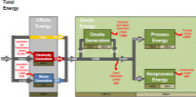

Manufacturing Energy Consumption Survey (MECS)
Chemical Industry Analysis Brief Change Topic: Steel | Chemical
Introduction
The chemical industries are a cornerstone of the U.S. economy, converting raw materials such as oil, natural gas, air, water, metals, and minerals into thousands of various products. Chemicals are key materials for producing an extensive assortment of consumer goods. They are also crucial materials in creating many resources that are essential inputs to the numerous industries and sectors of the U.S. economy.1
The manufacturing sector is classified by the North American Industry Classification System (NAICS) of which the chemicals sub-sector is NAICS 325 and encompasses many different industries that have their own particular energy usage patterns. As will be discussed in the energy intensity section, a few of the chemical-specific industries will be compared to the energy intensity in the chemicals sub-sector.
The chemical industries are the second largest user of energy in the manufacturing sector. Natural gas, liquefied petroleum gases (LPG), and natural gas liquids (NGL) are the major energy sources used in these industries. Including fuel and feedstock use, the chemical industries account for about 29 percent of the total energy consumed in the manufacturing sector (Figure 1).
Since 1991 the chemical industries have steadily increased their total energy consumption by 1.4 quadrillion Btu (quads). That constitutes a 28 percent increase of the total energy consumed by this sub-sector during the eleven year period (Figure 2). Over half of the increase, 736 trillion Btu, occurred between 1994 and 1998.
As will be seen later, the rise in consumption coincides with an increase in the LPG used as a feedstock. The increase in LPG usage was verified by comparing the MECS and the Economic Census - Manufacturing (EC-M) data which were collected for the same year, 2002. No direct comparison could be made, however, for the 1991, 1994 or 1998 data, so further evaluation of the increase will be verified using the 2006 MECS data.
Energy Consumption
There are two types of energy use in the manufacturing sector; energy consumed for fuel and energy consumed for feedstock. Energy consumed as a fuel includes all energy used for heat, power, and electricity generation, regardless of where the energy was produced. Not included in fuel are electricity inputs from onsite cogeneration, nor generation from combustible fuels, because that energy has already been included as generating fuel.2
Energy used as a feedstock, sometimes referred to as nonfuel energy use, is the energy used as a raw material for purposes other than for heat, power, and electricity generation. For instance, in the nitrogenous fertilizer industry natural gas is used as a raw material to produce fertilizers.
Energy Consumed as a Fuel - The chemical industries used over 3.7 quadrillion Btu (quads) of energy as fuel in 2002. 'Other' fuels make the second largest share of fuels consumed, after natural gas in the chemical industries (Figure 3). Roughly 43 percent of 'other' fuels are byproducts derived during the manufacturing processes. Waste gas is the primary byproduct fuel consumed and accounts for 96 percent of the byproduct fuel used in the chemical industries. Typically, waste gas is recovered and used to generate steam, preheat materials through heat exchangers, or supply heat to other plant processes.3
The fuel consumption of natural gas in the chemical industries increased approximately 19 percent between 1991 and 1998. However, the natural gas consumption decreased by a similar amount, 15 percent, during the four year period from 1998 to 2002. During that same four year period, 1998 to 2002, the consumption of byproduct fuel increased by 14 percent (Figure 4). This suggests that some chemical manufacturers' processes have become more flexible enabling them to use less natural gas, and additionally replacing some natural gas with more economical energy sources such as byproduct fuel/waste.
End Use of Fuel Consumption - The Manufacturing Energy Consumption Survey (MECS) collects fuel consumption by end use for six major energy sources – electricity, natural gas, coal, LPG, diesel/distillate, and residual fuel oil. However, byproduct fuels, particularly waste gas, are not included as one of the six major energy sources when collecting for end use.
Typically natural gas is used in boilers, process heating equipment, and non-process use such as for heating, ventilation and air conditioning (HVAC). In recent years, with the rising cost of natural gas, chemical manufacturers have looked towards waste gas to become a substitute for their natural gas consumption. Though the MECS does not collect end uses for waste gas, a portion of what is shown as "not reported/not asked" in Figure 5 is the waste gas used for heat and fuel purposes in numerous chemical processes.
Although there has been little change to the various end uses reported in the manufacturing sector between 1998 and 2002, Figure 5 suggests that chemical manufacturers are starting to substitute their natural gas use with less expensive energy sources such as waste gas.
Energy Used as a Feedstock - The chemical industries used over 3.7 quads of energy for feedstock use in 2002. This accounts for approximately 46 percent of the energy used as a feedstock in the manufacturing sector (Figure 6).
The two major energy sources used as feedstocks in the chemical industries are natural gas and the combination of liquefied petroleum gases (LPG) and natural gas liquids (NGL). Natural gas and LPG and NGL account for about 96 percent of the total feedstock use in the chemical industries. Furthermore, nearly all (99 percent) of the natural gas and LPG and NGL used as a feedstock in manufacturing are used in the chemical industries (Figure 7).
Natural gas used as a feedstock in the chemical industries increased by about eight percent between 1994 and 1998. However, the period between 1998 and 2002 natural gas used as a feedstock decreased by approximately 13 percent (Figure 8). This decrease in the natural gas used as a feedstock can be attributed, in part, to the rising cost of natural gas.
Figure 8 also illustrates that the use of LPG and NGL as a feedstock has increased significantly, around 94 percent, between 1994 and 2002. The largest portion of the increase, roughly 70 percent, was between 1998 and 2002. As previously mentioned, the increase was verified by comparing the MECS and the Economic Census - Manufacturing (EC-M) data which were collected for the same year, 2002, but no direct comparison could be made for the 1994 or 1998 data. Further evaluation of the 70 percent increase will be verified using the 2006 MECS data.
Energy Expenditures
The total energy expenditures in the chemical industries were over 32 billion dollars in 2002, 92 percent coming from electricity, natural gas, and LPG and NGL (Figure 9). LPG and NGL is the largest expenditure and accounts for roughly 48 percent of the total energy expenditures in these industries. At least partially, LPG and NGL account for such a large share of expenditures because they are the basic raw materials for creating plastics, one of the major products in chemical manufacturing.
The LPG and NGL expenditures increased by over seven billion dollars between 1998 and 2002 in the chemical industries (Figure 10).
Again, a direct comparison of the 2002 MECS and Economic Census LPG and NGL expenditures data were made and the 1998 expenditures data were not compared. Therefore the seven billion dollar increase between the 1998 and 2002 LPG and NGL expenditures will be confirmed using the 2006 MECS data.
Figure 11 shows the historical energy share of total establishment costs in the chemical industries. The percentages do not deviate much between 1994 and 1998; however, there was a 3.2 percent increase between 1998 and 2002 indicating a significant rise in energy expenditures as compared to the corresponding total establishment costs.
Producer Prices and Production
Table 1 shows the producer price indices for the chemical industries according to the U.S. Bureau of Economic Analysis (BEA). Producer prices are the prices that these industries received for their goods. As is shown in Table 1, the indices have increased between 1998 and 2002. The increase in producer prices corresponds with the increase in the energy expenditures as compared to the corresponding total establishment costs indicated in Figure 11.
Additionally, Table 2 below illustrates the production indices for the chemical industries according to BEA. Unlike the producer price indices shown in Table 1, the production indices in Table 2 have decreased between 1998 and 2002. As mentioned previously, there was a sharp increase in the LPG usage between 1998 and 2002 in the chemical industries, and further evaluation of the increase in consumption will be verified using the 2006 MECS data. If the LPG used in these industries in 2002 were excluded from the equation, the chemical industries total energy consumption would have decreased between 1998 and 2002. This decrease in the total energy consumption coincides with the reduction in shipments in the chemical industries as shown in Table 2.
| Producer Price Indices | 1998 | 1999 | 2000 | 2001 | 2002 |
|---|---|---|---|---|---|
| BEA | 94.472 | 94.789 | 100 | 100.698 | 100.553 |
| Source: U.S. Bureau of Economic Analysis, Gross-Domestic-Product-(GDP)-by Industry Data, http://bea.gov/industry/gdpbyind_data.htm | |||||
| Production Indices | 1998 | 1999 | 2000 | 2001 | 2002 |
|---|---|---|---|---|---|
| BEA | 97.860 | 99.075 | 100 | 96.775 | 93.804 |
| Sources: Federal Reserve Board, G.17: Industrial Production and Capacity Utilization, http://www.federalreserve.gov/releases/g17/; U.S. Bureau of Economic Analysis, Gross-Domestic-Product-(GDP)-by Industry Data, http://bea.gov/industry/gdpbyind_data.html | |||||
Energy Intensity
Typically in dealing with MECS energy statistics, energy intensities are measured as a ratio of energy consumption per an economic measure. One such economic measure often used is the dollar value of shipments. This is the dollar value received for the complete output at the company's billing price. This does not include excise taxes, freight or transportation charges, or installation charges.4
Another economic measure that is commonly used when analyzing energy intensities is the dollar of value added. This is a measure of manufacturing activity that is derived by subtracting the cost of materials (which covers materials, supplies, containers, fuel, purchased electricity, and contract work) from the value of shipments. This difference is then adjusted by the net change in finished goods and work-in-progress between the beginning- and end-of-year inventories.5
Energy consumption per dollar value of shipments has been stable for the chemical industries over the past ten years (Figure 12). However, energy consumption per dollar of value added has slightly decreased during the same time period, the sharpest decline occurred between 1998 and 2002 (Figure 13).
By either means, stable or declining energy intensities as specified in Figures 12 and 13 can be an indication that the energy efficiency in the chemical industries has improved. Although this may be true for the chemical industries as a whole, it may not be true of the different sub-industries within chemicals. For instance, Figures 14 and 15, the alkalies and chlorine industry and nitrogenous fertilizer industry respectively, show that these two industries decreased their energy consumption per dollar value of shipments over the past ten years. This indicates that the energy efficiency in these two sub-industries within chemicals improved.
The plastics material and resins industry, another sub-industry within chemicals, however, increased their energy consumption per dollar of value of shipments over the same ten year period with the sharpest increase coming between 1998 and 2002 (Figure 16). This indicates that this sub-industry may have become less energy efficient. Also, the plastics material and resins industry is responsible for a majority of the liquefied petroleum gas (LPG) consumed in chemicals because these LPG's are the raw materials the sub-industry uses to make their products. The energy consumed per dollar value of shipments however only takes into consideration energy consumed as a fuel and does not account for any nonfuel and/or feedstock use. The increase in the energy consumed per dollar of value of shipments for the plastics material and resins industry between 1998 and 2002 corresponds with Figure 8 that shows the LPG usage in the chemical industries increased during this same time period. This suggests that this sub-industry, largely responsible for LPG consumption as a raw material, also consumed a great deal of energy for fuel between 1998 and 2002.
Energy-Management Activities
Over the past several years manufacturers in general have increasingly recognized the correlation between rising energy costs and their ever shrinking profit margins. Through this understanding, manufacturers have greatly improved their energy-management practices as is the case with manufacturers in the chemicals sub-sector. Table 3 illustrates that the chemical industries have followed this trend, although not all of the year-to-year differences shown are statistically significant.
Most notably, energy audits and equipment installation and/or retrofit for enhancing energy efficiency are the two areas where these industries significantly improved their energy-management practices. Energy audits are programs carried out either in-house or by another company in which an auditor inspects a manufacturing establishment and suggests ways energy can be saved. Installing new equipment or retrofitting old is often a result of performing these energy audits because it improves the energy efficiency at the establishment. The energy audit participation rate in these industries increased 12 percent between 1998 and 2002. Similarly, the participation rates for the various equipment installations and/or retrofits to improve energy efficiency significantly increased, three to eight percent, during the same four year period.
The percent participation rates were also measured for the same energy-management activities for all manufacturing industries in the U.S. economy. It was observed upon analyzing the results that the percent of manufacturing establishments participating in the energy-management activities increased from 1998 to 2002. Likewise, the chemical industries also improved their percent participation in the energy-management activities between 1998 and 2002.
| Energy-Management Activity | Percent Participation in 1998 | Percent Participation in 2002 | Percent Change 1998-2002 |
|---|---|---|---|
| Participation in One or More of the Following Types of Activities | 49 | 55 | 6 |
| Energy Audits | 19 | 31 | 12* |
| Direct Electricity Load Control | 19 | 21 | 2 |
| Special Rate Schedule | 20 | 17 | -3 |
| Standby Generation Program | 7 | 9 | 2 |
| Equipment Rebates | 3 | 4 | 1* |
| Power Factor Correction or Improvement | 17 | 18 | 1 |
| Interval Metering (needed to manage energy use for programs such as real-time pricing) | N/A | 8 | N/A |
| U.S. Environmental Protection Agency's Energy Star Program | 3 | 1 | -2* |
| U.S. Environmental Protection Agency's Green Lights Program | 3 | 2 | -1 |
| U.S Department of Energy's Motor Challenge Program | 3 | N/A | N/A |
| Other Federally Sponsored Energy or Environmental Management Program | N/A | 0 | N/A |
| Equipment Installation or Retrofit for the Primary Purpose of Improving Energy Efficiency Affecting: | |||
| Steam Production/System | 12 | 15 | 3* |
| Compressed Air Systems | 16 | 24 | 8* |
| Direct/Indirect Process Heating | 10 | 13 | 3 |
| Direct Process Cooling, Refrigeration | 8 | 13 | 5* |
| Direct Machine Drive | 19 | 23 | 4 |
| Facility HVAC | 16 | 22 | 6* |
| Facility Lighting | 14 | 21 | 7* |
| Equipment Installation or Retrofit for the Primary Purpose of Using a Different Energy Source | 6 | 5 | -1 |
| Other | 1 | 4 | 3* |
| Full-Time Energy Manager | 4 | 5 | 1* |
| * Significance testing was performed on the percentages in Table 3 to account for relative standard errors during data collection and determine those differences that are truly significant. Sources: Energy Information Administration, Manufacturing Energy Consumption Survey - Table 8.1: Number of Establishments by Participation in Energy-Management Activity, 1998, and 2002, http://www.eia.doe.gov/emeu/mecs/mecs2002/data02/shelltables.html |
|||
Fuel Switching Capacity
The capability to switch from one energy source to another has many benefits for chemical manufacturers. For instance, a chemical plant can save money by switching from one fuel to another when energy prices rise. However, there are limitations to fuel switching as well. One limitation is that a plant might not be able to switch to another energy source because one is not readily available, or may adversely change the composition of the product.
Table 4 shows the fuel switching capability in the chemical industries in 2002. It does not measure whether these industries did switch, but rather, has the capability to switch to an alternate fuel within 30 days. The table illustrates that the chemical industries have a significant capability to switch fuels, particularly the means to switch from coal, residual, and distillate fuels. Similarly, in 1994, the last time fuel switching data were collected on the MECS, the percent of the total fuel consumed that was switchable for coal, residual, and distillate fuels were 33, 41, and 29 percent respectively.
The chemical industries faired similarly in their capability to switch from natural gas, electricity, coal, residual, and distillate fuels compared to other U.S. manufacturers in 2002. The capability to switch from LPG in 2002, however, was a different story. The chemical industries capability to switch from LPG was not as large as other manufacturers, in part, because LPG is not used for fuel purposes in many chemical industries but instead as a feedstock to make various chemical products.
| Capability to Switch from: | Total Consumed* | Amount Switchable | Percent of Total Consumed that was Switchable |
|---|---|---|---|
| Natural Gas | 1,678.1 | 168.4 | 10 |
| Residual Fuel | 40.8 | 12.5 | 31 |
| Electricity | 550.6 | 7.7 | 1 |
| Distillate Fuel | 14.1 | 2.3 | 17 |
| Coal | 321.7 | 115.5 | 36 |
| LPG | 32.2 | 0.4 | 1 |
| * The total electricity consumed amount does not include any electricity generated onsite. Sources: Energy Information Administration, Manufacturing Energy Consumption Survey — Tables 10.2, 10.4, 10.6, 10.8, 10.10, and 10.12: Capability to Switch Fuels to Alternative Energy Sources, 2002, http://www.eia.doe.gov/emeu/mecs/mecs2002/data02/shelltables.html |
|||
Footnotes
1 U.S. Department of Energy, Energy Efficiency and Renewable Energy, Industrial Technologies Program, Chemicals Industry of the Future, http://www1.eere.energy.gov/industry/chemicals/profile.html
2 Energy Information Administration, Manufacturing Energy Consumption Survey, MECS Definition of Fuel Use, http://www.eia.doe.gov/emeu/mecs/mecs98/datatables/fueldef.html
3 Energy Information Administration, Manufacturing Energy Consumption Survey, MECS Definition of NonFuel (Feedstock), http://www.eia.doe.gov/emeu/mecs/mecs98/datatables/nonfueldef.html
4 Energy Information Administration Glossary, "Value (of shipments)"
5 Energy Information Administration Glossary, "Value added by manufacture"
Features
Other End Use Surveys
DOE Uses MECS Data
Manufacturing Energy and Carbon Footprints

Associated Analysis
Manufacturing Energy Sankey Diagrams
Manufacturing Energy Flows Tool